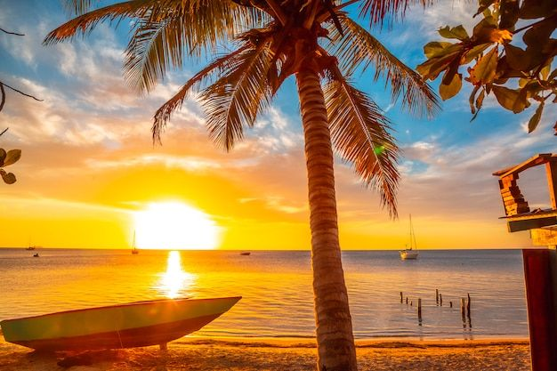
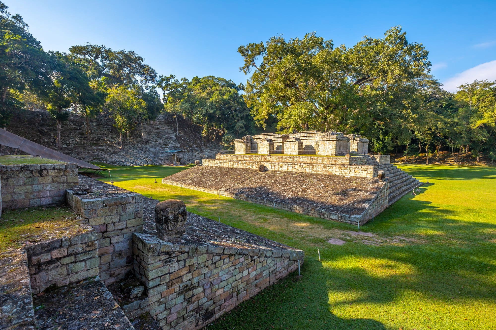
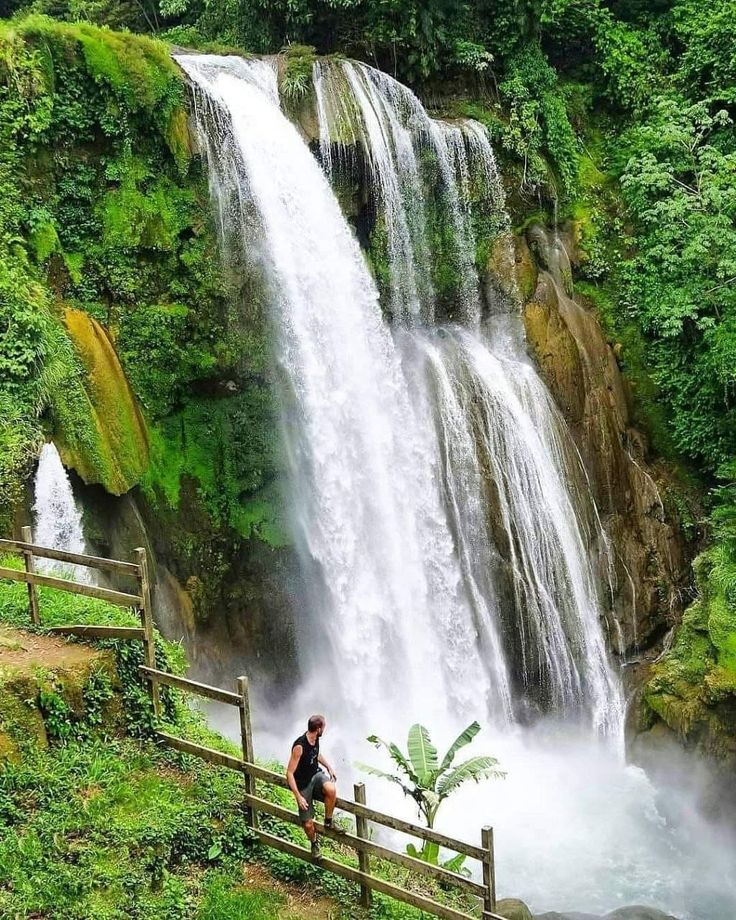
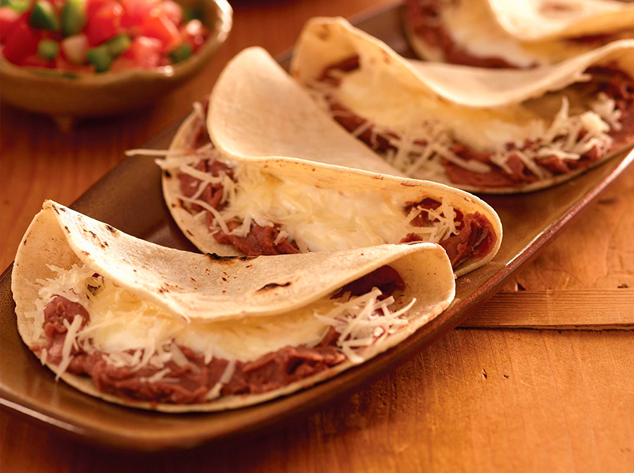
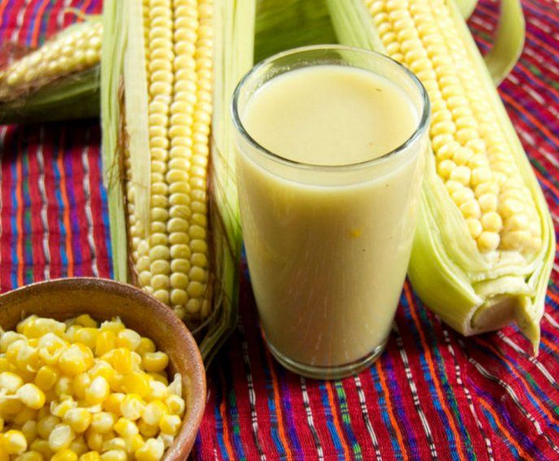

DESCUBRE HONDURAS
Un país lleno de belleza por descubrir
Explora nuestras playas, arrecifes, montañas, tradiciones y sabores que hacen único a Honduras.
Explorar destinosLUGARES QUE TE ENCANTARÁN
Descubre nuestros destinos
Conoce algunos de los lugares más hermosos de Honduras.


SABORES DE NUESTRA TIERRA
La riqueza de la gastronomía hondureña
Nuestra cultura también se descubre a través de la comida. Conoce algunos platillos y bebidas tradicionales de Honduras.
Descubrir nuestra cultura
Baleadas
Uno de los platillos más representativos de Honduras.

Sopa de caracol
Un plato tradicional de la gastronomía de la costa caribeña.

Atol de elote
Una bebida tradicional elaborada a base de maíz.